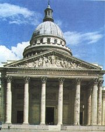

Diderotova Encyklopedie obsahovala pøíliš pokrokové myšlenky, a proto její vydávání zastavila cenzura. Posledních deset dílù muselo vyjít tajnì.
|
OSVÍCENSTVÍ
Osvícenství je myšlenkovı smìr, kterı se prosadil v 18. stol. v Anglii (Locke, Berkeley, Hume), Francii (Montesquieu, Voltaire, Diderot), Nìmecku (Lessing) a dalších zemích. Spolu s racionalismem ovlivnilo vìdu, umìní i politiku. Pojem osvícenství zaèal pouívat Voltaire a definitivnì ho prosadil nìmeckı filozof Imanuel Kant (1724-1804), kterı napsal sta s názvem Co je osvícenství. Osvícenci chtìli šíøit osvìtu, a proto se vìnovali hlavnì nauèné tvorbì, filozofii a vìdì. Ve vlastní tvorbì se nenechali svazovat pøísnımi pravidly klasicismu. Upøednostòovali rozum (ratio) a pøísnì vìdecké metody poznání zaloené na pozorování a zkušenosti. Buï zcela zavrhovali víru v Boha, nebo se hlásili k deismu jako Anglièan John Locke (1632-1704). Vìtšina francouzskıch osvícencù spolupracovala na projektu Encyklopedie aneb Racionální slovník vìd, umìní a øemesel (1751-1772), která mìla obsáhnout veškeré poznání lidstva, proto se jim nìkdy øíká encyklopedisté. Hlavními redaktory Encyklopedie byli d’Alembert a Diderot. Ve vıtvarném umìní se osvícenství neprosadilo. Jean-Baptiste Greuze [gréz] (1725-1805) maloval mravolièné vıjevy (Návrat ztraceného syna) a francouzskı klasicistní sochaø Jean-Antoine Houdon [udon] (1741-1828) vytvoøil podobizny vıznamnıch osvícencù.
|
Historie
Osvícenskı absolutismus se prosadil v Prusku, Rusku a pøedevším v Rakousku. Moc zùstala v rukou panovníka, kterı se promìnil v pilného reformátora. Øadu prospìšnıch reforem vyhlásila císaøovna Marie Terezie (1740-1780) a její syn Josef II. (1780-1790) – povinná školní docházka, zrušení nevolnictví, toleranèní patent (náboenská svoboda), katastrální reforma, sekularizace církevních majetkù, zákaz jezuitského øádu...
|
Denis Diderot (1713-1784)
Denis Diderot [deni didro] byl hlavním redaktorem nauèného slovníku Encyklopedie (Prospekt Encyklopedie). Pro své názory si musel mnohé vytrpìt – pojednání Filozofické myšlenky bylo spáleno, protoe obsahovalo protináboenské vıpady, za List o slepıch k ponauèení vidoucím byl dokonce poslán do vìzení! Finanènì ho podporovala ruská carevna Kateøina II. Romány Jeptiška, Rameaùv synovec a Jakub fatalista a jeho pán a spis D´Alembertùv sen mohly vyjít a po autorovì smrti.
|
Denis Diderot: Jeptiška
Hlavní hrdinka antiklerikálního románu Jeptiška – Zuzana Simoninová je proti své vùli pøinucena ke vstupu do kláštera. Matka pøedstavená ji sice laskavì pøijme, ale její nástupkynì Zuzanu tırá, zvláš kdy se dozví, e podala alobu na zrušení svého øeholního slibu. V novém klášteøe Zuzana naváe vztah s lesbickou abatyší. Nakonec se jí podaøí uprchnout a stane se pradlenou.
Základem románu byla nevinná mystifikace. Diderot a jeho pøátelé psali markızi de Croismare dopisy, ve kterıch ho uprchlá jeptiška ádá o pomoc.
|

Houdon: Mrznoucí dívka
Charakterizuj titulní postavu.
Èím vším musela projít?
Co víš o ivotì v klášterech?
Charakterizuj rùzné názory na krásno, jak je podává Diderot.
Souhlasíš s Diderotovımi názory? S kterımi a proè?
Co je podle tebe krásno? Co je krásné? Co se ti líbí?
Jak se nazıvá vìda o krásnu? Èím se zabıvá?
|
Voltaire (1694-1778)
Voltaire [voltér], vlastním jménem François-Marie Arouet [fransoa mari arue], napsal pøes 50 divadelních her (Irena, Mohamed èili Fanatismus, Semiramis, Èínskı sirotek, Guebrové èili Tolerance...), eposy Henriáda a Panna Orleánská, prózy Candide, Mikromegas a Prosáèek, pojednání O snášenlivosti, Filozofické listy, Století Ludvíka XIV. a Historie Karla XII. Pøispìl do Diderotovy Encyklopedie a sepsal Filozofickı slovník. Voltaire se zastával nespravedlivì obvinìnıch. Sám byl za epigram na Filipa Orleánského poslán do vìzení a pozdìji musel emigrovat. Pùsobil v Anglii, na dvoøe pruského krále Fridricha II. a ve Švıcarsku.
|
Voltaire: Candide aneb O optimismu
Titulní hrdina románu Candide [kandid] ije na zámku nìmeckého barona, kde ho vychovává filozof Panglos. Jeho krédo je prosté: tento svìt je nejlepší ze všech monıch a není úèinku bez pøíèiny. Kdy baron zjistí, e se zamiloval do jeho dcery Kunigundy, okamitì svého chránìnce vyene. Optimista Candide putuje svìtem plnım podvodníkù a proívá øadu groteskních dobrodruství. Jeho cesty se nìkolikrát zkøíí s milovanou Kunigundou i Panglosem. V Americe objeví bájné Eldorado a za drahokamy, které zde získá, vykoupí své pøátele z otroctví. Nakonec se všichni usadí na venkovském statku nedaleko Caøihradu.
|

Houdon: Sedící Voltarie
Jsi optimista nebo pesimista? Proè?
Co bys udìlal/a s poklady z Eldorada?
Zkus Eldorado nakreslit.
|
Daniel Defoe (1660-1731)
Anglickı spisovatel Daniel Defoe [denjel difou] bıvá povaován za pøedchùdce realismu. Je autorem románù Robinson Crusoe, Kapitán Singleton a Moll Flandersová.
Kterou knihu by sis vzal/a na opuštìnı ostrov? Proè?
Co èlovìk potøebuje, aby pøeil sám na pustém ostrovì?
Co je robinsonáda?
|
Daniel Defoe: Robinson Crusoe
Robinson Crusoe touil po dobrodruství, a proto se vydal na moøe. Upadl ale do otroctví, a kdy se mu podaøilo utéct, usadil se v Brazílii a vìnoval se plantánictví a obchodu s otroky. Pøi plavbì do Afriky jeho loï ztroskotala.
Troseèník je na ostrovì úplnì sám a musí se o sebe postarat. Po 25 letech zachraòuje divocha pøed kanibaly a dává mu jméno Pátek. Udìlá z nìj svého sluhu a snaí se ho nauèit všemu, co umí. Nakonec se mu podaøí vrátit se do Anglie.
Defoe ve svém románu líèí soudobou anglickou spoleènost i ivot mimo civilizaci. Robinson se na ostrov vrátí ještì jednou po 7 letech. Setká se tam s námoøníky, kteøí se vzbouøili proti kapitánovi lodì, je troseèníka zachránila. Za trest tu byli vysazeni a museli se postarat sami o sebe jako on.
|

Robinson Crusoe na dobové ilustraci
Zapisuješ si pro (dobro) a proti (zlo), kdy se nemùeš rozhodnout?
Proè Robinson uèí Pátka svou øeè, nemìl by se spíše nauèit øeè svého sluhy?
Najdi v ukázce doklady racionalismu.
|
Jonathan Swift (1667-1745)
Anglickı (irskı) spisovatel Jonathan Swift je povaován za pøedchùdce realismu. Vìnoval se dráze anglikánského knìze a satirické tvorbì. V Povídaèce o putnì napadl konkurenèní církve, ve Skromném návrhu, jak pøedejít tomu, aby se dìti chudıch lidí staly bøemenem pro své rodièe nebo pro vlast, a jak je uèinit uiteènımi pro veøejnost ironicky doporuèuje podávat irské dìti k obìdu boháèùm. Proslavil se románem Gulliverovy cesty.
|
Jonathan Swift: Gulliverovy cesty
Swiftùv román Gulliverovy cesty mùeme povaovat za utopii, fantastickı cestopis nebo satiru. Hlavním hrdinou knihy je kapitán Lemuel Gulliver, kterı navštívil zajímavé krajiny s podivnımi obyvateli a zail zde øadu dobrodruství. První zemì se jmenuje Liliput a ijí zde trpaslíci, druhá se jmenuje Brobdingnag a obıvají ji obøi, obyvatelé Laputy ijí odtreni od skuteènıch problémù na létajícím ostrovì a v kraji Hvajninimù vládnou primitivním lidem (Jahuùm) ušlechtilí konì... Bìhem cesty si Gulliver uvìdomuje relativnost celé øady hodnot.
|

Najdi v ukázce prvky osvícenství a racionalismu.
Vymysli si další pøíhodu moøeplavce Gullivera. Jakou zemi by ještì mohl navštívit, s kım by se mohl setkat a co by tam mohl proít?
|
Laurence Sterne (1713-1768)

Anglickı spisovatel Laurence Sterne [lorens stern] se narodil v chudé rodinì, ale po smrti otce se dostal k bohatım pøíbuznım, kteøí mu umonili získat univerzitní vzdìlání. Sterne si zvolil ivot anglikánského pastora. Musel se vyrovnat s duševní chorobou své manelky.
Je autorem novátorskıch knih ivot a názory blahorodého pana Tristrama Shandyho a Sentimentální cesta. Nìkdy bıvá øazen k preromantikùm.
Co si myslíš o Sternovıch experimentech s vypravováním? Zaujaly tì? Proè?
|
Laurence Sterne: ivot a názory blahorodého pana Tristrama Shandyho
Román ivot a názory blahorodého pana Tristrama Shandyho je zajímavı pøedevším zpùsobem vypravování. Sterne odmítá lineární dìj a vetkává do svého pøíbìhu tak velké mnoství odboèek, a se v nich ètenáø naprosto ztrácí. Román mùeme zároveò oznaèit za experimentální i humoristickı. Zaèíná plozením titulního hrdiny a pokraèuje øadou nedorozumìní, vsuvek a úvah, bìhem nich autor hlavní postavu zcela opustí. Pøíznaèné je, e se pøedmluva místo na zaèátku knihy nachází kdesi uprostøed...
Další autoøi a díla
Montesquieu: Duch zákonù, Perské listy
Fielding: Tom Jones, pøíbìh nalezence
Rochefoucauld: Maximy
Paine: Vìk rozumu
Gay: ebrácká opera
Radišèev: Cesta z Petrohradu do Moskvy
|

V dobì osvícenství se nechávali šlechtici portrétovat s knihou, aby ukázali svou uèenost. Tento obraz namaloval klasicistní malíø Mengs.
Greuze: Ochrnutı
|
Internetové stránky
Co to je, encyklopedie
Co je co, encyklopedie
Vševìd, encyklopedie
Britannica, encyklopedie
Diderotova Encyklopedie
Voltaire, informace
Gulliverovy cesty
Sterne
Greuze: Návrat ztraceného syna
|
Doporuèená èetba
Billy, A.: ivot Diderotùv, Praha 1988
Defoe, Daniel: Moll Flandersová, pøel. G.Pospíšilová, Praha 1983
Defoe, D.: Robinson Crusoe, pøel. Vyskoèil, Vodièka, Odeon, Praha 1986
Diderot, Denis: Jeptiška, Rameaùv synovec, Jakub fatalista a jeho pán, Odeon, Praha 1977
Diderot, D.: O umìní, pøel. R.Grebeníèková, Praha 1983
Diderot, D.: Vıbor z díla, pøel. Binder, Veselı, Svoboda, Praha 1990
Encyklopedie aneb Racionální slovník vìd, umìní a øemesel, Praha 1954
Halada, Jan: Osvícenství – vìk rozumu, SPN, Praha 1984
Hlinka, Bohuslav: Robinson Crusoe, Mıtus a skuteènost, Práce, Praha 1983
Im Hof, Ulrich: Evropa a osvícenství, pøel. A.Kusák, NLN, Praha 2001
Kundera, Milan: Jakub a jeho pán, Pocta D.Diderotovi (dramatizace)
Orieux, Jean: Voltaire neboli Vláda ducha (2 svazky), pøel. Z.Schanta, Odeon, Praha 1979
Sterne, Laurence: ivot a názory blahorodého pana Tristrama Shandyho, pøel. A.Skoumal, Odeon, Praha 1971
Swift, Jonathan: Gulliverovy cesty, pøel. A.Skoumal, Praha 1953
Swift, J.: Vıbor z díla, pøel. A.Skoumal, SNKLHU, Praha 1953
Swift, J.: Zakletı duch, pøel. A.Skoumal, Praha 1967 (korespondence, pamflety)
Voltaire: Romány a povídky, SNKLHU, Praha 1960
|
Pøiprav si referát o nìkteré z uvedenıch knih nebo internetovıch stránek.
Které èeské encyklopedie pouíváš?
Které encyklopedie znáš?
Najdi v encyklopedii hesla: encyklopedie, osvícenství, Diderot, Voltaire, Defoe a Swift.

Co najdeš v paøíském Pantheonu?
Poznámka: Knihy Gulliverovy cesty a Robinson Crusoe si mùeš pøeèíst také ve zkrácenıch verzích urèenıch dìtem.
|
|